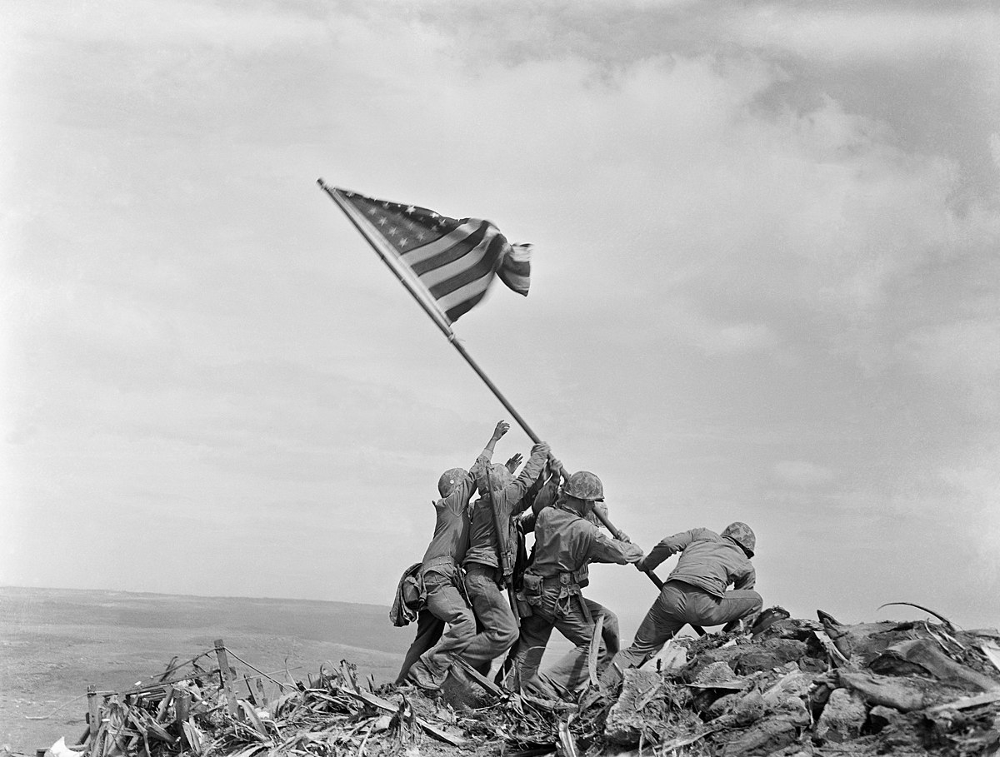

Raising the Flag on Iwo Jima is an iconic photograph taken by Joe Rosenthal on February 23, 1945, which depicts six United States Marines raising a U.S. flag atop Mount Suribachi, during the Battle of Iwo Jima, in World War II
Major Battles Of World War II
-
Operation Torch (November of 1942)
-
Siege of Leningrad (September of 1941 to January of 1942)
-
Battle of the Atlantic (September of 1939 to May of 1945)
-
Battle of Britain (July of 1940 to October of 1940)
-
Operation Barbarossa (June to December of 1941)
-
Battle of Stalingrad (August of 1942 to February of 1943)
-
Battle of Okinawa (April to June of 1945)
-
Battle of Midway (June of 1942)
-
Battle of Berlin (April to May of 1945)
-
Battle of the Bulge (December of 1944 to January of 1945)